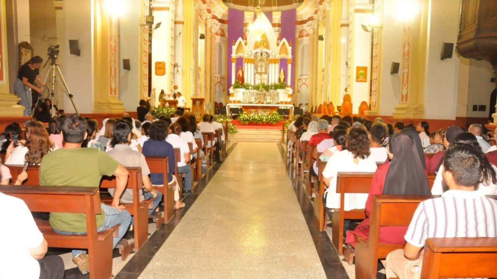
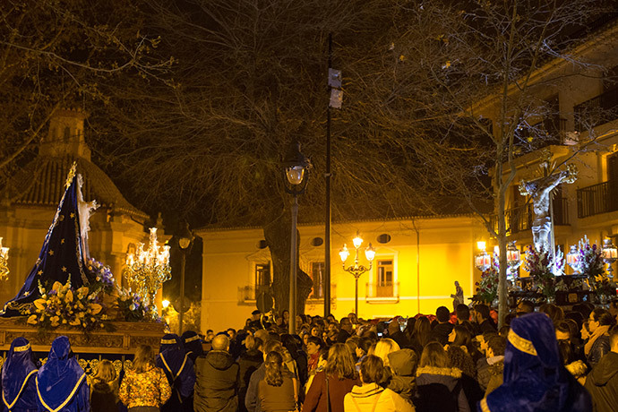
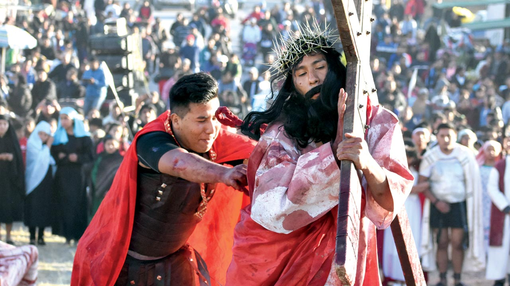

Tradiciones de Semana Santa por Departamento

En La Paz, es tradición visitar siete iglesias durante el Jueves Santo, recorriendo las diferentes parroquias para rendir homenaje a la Pasión de Cristo.
Esta práctica fomenta la reflexión personal y fortalece el sentido de comunidad entre los fieles.
Cada iglesia ofrece una representación única de la historia religiosa y cultural de la ciudad.

En Santa Cruz, se realizan procesiones nocturnas con velas y antorchas que iluminan las calles durante la vigilia.
La atmósfera es de profundo recogimiento y la fe se expresa a través de cantos y rezos.
Esta tradición moderniza la celebración sin perder su esencia ancestral y cultural.

En Cochabamba, las calles se llenan de procesiones y obras teatrales que recrean episodios de la Pasión de Cristo.
Los actores locales y la participación popular hacen de esta tradición un evento vibrante y conmovedor.
Se destaca la mezcla de expresiones artísticas y devoción religiosa en cada representación.

En Tarija, las celebraciones se realizan en las plazas principales con actos religiosos y culturales.
Conciertos de música sacra y representaciones vivas en la plaza unen tradición y modernidad en la ciudad.
Esta costumbre realza la identidad cultural y el sentido de pertenencia de los tarijeños.